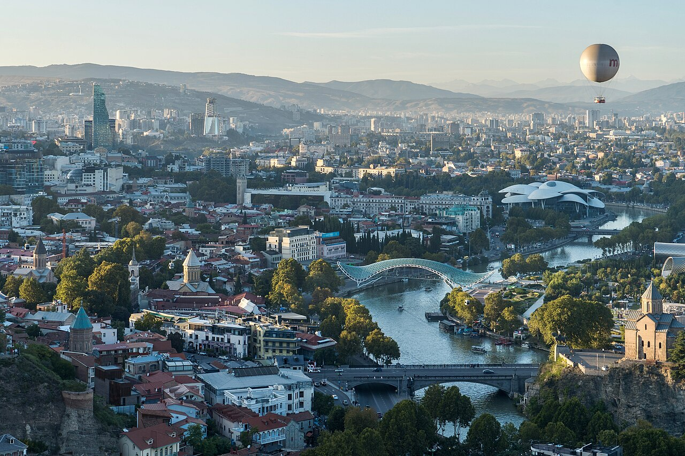

☕ Last breakfast at Address 9D
Hotel breakfast room· included
Eat well — airline food is airline food. Make it count: nadughi (fresh sweet cheese), bread, jam, espresso.

Slow morning, slow goodbye. There's time for one last khachapuri, maybe one last browse at the Dry Bridge market, before the Bolt to the airport and the flight south. Wheels up at 15:10; home by midnight.
Eat well — airline food is airline food. Make it count: nadughi (fresh sweet cheese), bread, jam, espresso.
If you saw something here on Day 2 and walked away, go back for it now. Small antique enamels, hand-painted ceramics, an old samovar — pieces of the trip you can hold in your hand.
Roll the suitcase down to reception. Hotel can hold bags if you want a coffee nearby before leaving.
Order a comfort or van if you've got bags. Aim for the airport ~12:50 — Air Arabia opens check-in 2.5 hours before departure.
Print boarding passes if you didn't online. TBS is small and well-signed — at most 30 minutes from drop-off to gate. Spend the buffer at the small wine shop landside; bottles of Khvanchkara or saperavi make easy gifts.
Wheels up. Last view of the Caucasus through the window as the plane climbs south. The sun sets somewhere over the Caspian.
Through e-gates, baggage, taxi or Careem home. Open one of those bottles tomorrow with the photos still warm on the phone — and start thinking about which place to go back to first.